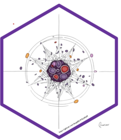

QUASAR (Quantifying Uncertainty in cell-type Abundance from Subsampled Aggregated Replicates) is an R package for cell-type deconvolution of bulk transcriptomics data. Beyond point estimates, QUASAR is designed to report confidence and prediction intervals by separating epistemic uncertainty (model and training-target uncertainty) from aleatoric uncertainty (irreducible variability around a predicted composition).
The package additionally provides native R implementations of
four deep-learning deconvolution methods — Scaden, TAPE,
DISSECT, and OmicsTweezer — which are otherwise only available in
Python. These implementations are written in torch for R, support
GPU acceleration, and work directly with Seurat and
SingleCellExperiment objects, so that the entire
deconvolution workflow can stay inside the R/Bioconductor ecosystem.
Sergej Ruff1, Whitney Tam1, Cynthia Bullerjahn1, Andreas Beineke2, Michael Altenbuchinger3, Klaus Jung1
1 Institute of Animal Genomics, University of Veterinary
Medicine Hannover, Foundation, Germany
2 Department of Pathology, University of Veterinary Medicine
Hannover, Foundation, Germany
3 Department of Medical Bioinformatics, University Medical
Center Göttingen, Germany
Maintainer: Sergej Ruff (sergej.ruff@tiho-hannover.de). Sergej Ruff is also responsible for the design and implementation of QUASAR and for the native R ports of Scaden, TAPE, DISSECT, and OmicsTweezer.
Corresponding author: Klaus Jung (klaus.jung@tiho-hannover.de)
Install the development version of QUASAR from GitHub:
All example data used below live in a companion data package:
QUASAR relies on torch. If this is your first
torch installation, run torch::install_torch()
once before using any of the deep-learning methods. GPU support requires
a CUDA-enabled build of torch; every training function
accepts device = "auto", "cpu", or
"cuda".
QuasarDeconData ships a donor-balanced COVID-19 PBMC
single-cell reference together with ten independently simulated
pseudo-bulk test datasets. We use the training split as the single-cell
reference and the first pseudo-bulk dataset as the target bulk
throughout this README.
library(quasar)
library(QuasarDeconData)
# Single-cell reference (Seurat object; metadata: cell_type, donor_id)
sc_ref <- load_cov_imm("train")
sc_ref
table(sc_ref$cell_type)
# COVID-19 pseudo-bulk target data (1000 samples)
pbulk <- load_cov_pbulk(1)
bulk <- pbulk$bulk_expression_profiles # genes x samples
truth <- pbulk$ground_truth_proportions # samples x cell types
dim(bulk)
dim(truth)All four deep-learning methods below take the same two inputs: a
single-cell reference object and a genes × samples bulk
matrix. The cell-type column is named cell_type in this
dataset, so it is passed explicitly wherever the method’s default
differs.
The chunks in this README are not evaluated when the file is rendered, since training the models takes minutes to hours depending on hardware. The step counts and epochs shown are reduced for demonstration; use the defaults for real analyses.
Placeholder — the QUASAR deconvolution interface is not yet exported and will be documented here once released.
QUASAR combines domain adaptation between simulated pseudo-bulks and target bulk samples with an evidential Dirichlet output, a deep ensemble, and parametric-bootstrap retraining. Each predicted composition is represented by a Dirichlet distribution whose mean gives the cell-type proportions and whose dispersion gives sample-specific aleatoric uncertainty, while ensemble spread and bootstrap retraining supply the epistemic component. Confidence intervals are derived from epistemic uncertainty alone; prediction intervals additionally propagate the Dirichlet dispersion.
## --- placeholder: planned interface -------------------------------------
# fit <- quasar(
# sc_data = sc_ref,
# bulk = bulk,
# celltype_col = "cell_type",
# n_models = 5,
# device = "auto"
# )
#
# fit$proportions # ensemble-mean cell-type proportions
# fit$confidence_interval # epistemic-only interval around the mean
# fit$prediction_interval # epistemic + aleatoric predictive interval
# fit$uncertainty # per-sample, per-cell-type variance componentsUntil then, the sections below cover the deep-learning methods that are already available in the package.
Each ported method ships with its own simulator, matching the behaviour of its original Python implementation. QUASAR also provides a general-purpose pseudo-bulk simulator that can be used independently of any particular method, including a spatial mode for spot-level profiles.
sim <- quasar_sim_bulk(
sc_ref,
n_bulk_samples = 1000,
cells_per_bulk = 500,
cell_type_column = "cell_type",
patient_id_column = "donor_id",
return_signature_matrix = TRUE
)
dim(sim$bulk_expression_profiles) # genes x samples
head(sim$ground_truth_proportions) # samples x cell types, rows sum to 1
# Spot-level simulation instead of bulk
spots <- quasar_sim_bulk(
sc_ref,
n_bulk_samples = 500,
mode = "spatial",
cell_type_column = "cell_type"
)Scaden trains an ensemble of three multilayer perceptrons
(m256, m512, m1024) on simulated
pseudo-bulks and averages their predictions.
# 1. Simulate pseudo-bulk training data
scaden_sim <- scaden_sim_pb(
sc_data = sc_ref,
celltype_col = "cell_type",
n = 500, # cells per pseudo-bulk
samplenum = 5000, # number of pseudo-bulks
sparse = TRUE,
seed = 42
)
# 2. Process simulated + real bulk data (variance filter, log, per-sample scaling)
scaden_proc <- scaden_process(
sim_data = scaden_sim,
bulk_data = bulk,
mode = "scaden", # or "tape" for TAPE-style preprocessing
var_cutoff = 0.1
)
# 3. Train the three-model ensemble
scaden_fit <- scaden(
train_x = scaden_proc$train_x,
train_y = scaden_proc$train_y,
lr = 1e-4,
batch_size = 128,
epochs = 20,
seed = 123
)
# 4. Predict cell-type proportions
scaden_pred <- scaden_predict(scaden_fit, scaden_proc$test_x)
head(scaden_pred$average_output) # ensemble average
head(scaden_pred$prediction_model256) # individual ensemble membersTAPE uses an autoencoder whose latent layer encodes cell-type
fractions and whose decoder weights form a signature matrix. Its
adaptive stage refines the model on the target bulk data, either jointly
across all samples (mode = "overall") or separately per
sample (mode = "high-resolution").
# 1. Simulate
tape_sim <- tape_simulate(
sc_data = sc_ref,
celltype_col = "cell_type",
samplenum = 5000,
n = 500,
sparse = TRUE,
random_state = 42
)
# 2. Process
tape_proc <- tape_process(
simudata = tape_sim,
real_bulk = bulk, # genes x samples
variance_threshold = 0.98,
scaler = "mms"
)
# 3. Train the autoencoder
tape_model <- tape_train(
train_x = tape_proc$train_x,
train_y = tape_proc$train_y,
batch_size = 128,
epochs = 128,
seed = 0
)
# 4. Predict, with tissue-adaptive refinement
tape_res <- tape_predict(
model = tape_model,
test_x = tape_proc$test_x,
genename = tape_proc$genename,
celltypes = tape_proc$celltypes,
samplename = tape_proc$samplename,
adaptive = TRUE,
mode = "overall" # or "high-resolution"
)
head(tape_res$pred) # samples x cell types
head(tape_res$sigm) # adapted signature matrixThe whole workflow is also available as a single wrapper:
tape_res <- tape(
sc_data = sc_ref,
real_bulk = bulk,
celltype_col = "cell_type",
samplenum = 5000,
n = 500,
epochs = 128,
adaptive = TRUE,
mode = "overall"
)DISSECT trains an ensemble of networks with semi-supervised consistency regularization, mixing simulated and real samples during training. It estimates cell-type fractions and, optionally, cell-type-specific expression.
# 1. Simulate mixtures (save_expr = TRUE is required for expression estimation)
dissect_sim <- dissect_simulate(
sc_data = sc_ref,
celltype_col = "cell_type",
batch_col = "donor_id",
type = "bulk",
n_samples = 5000,
save_expr = TRUE,
seed = 42
)
# 2. Process
dissect_proc <- dissect_process(
bulk = bulk, # genes x samples
sim_data = dissect_sim,
var_cutoff = 0.1,
test_in_mix = 1
)
# 3. Estimate cell-type fractions
dissect_prop_res <- dissect_prop(
processed = dissect_proc,
n_steps = 5000,
models = 1:5, # ensemble size
device = "auto"
)
head(dissect_prop_res$fractions)
# 4. Optional: cell-type-specific expression
dissect_expr_res <- dissect_expr(
bulk = bulk,
fractions = dissect_prop_res$fractions,
sim_data = dissect_sim,
n_steps_expr = 5000,
device = "auto"
)
names(dissect_expr_res$expression_layered) # one matrix per cell typeOr, end to end:
dissect_res <- dissect(
sc_data = sc_ref,
bulk = bulk,
celltype_col = "cell_type",
batch_col = "donor_id",
save_expr = TRUE,
device = "auto"
)
head(dissect_res$fractions)OmicsTweezer adds an optimal-transport-inspired domain adaptation term to the training objective, encouraging the encoder to align simulated pseudo-bulks with the target bulk samples.
# 1. Simulate
ot_sim <- omics_simulate(
sc_data = sc_ref,
celltype_col = "cell_type",
samplenum = 5000,
n = 500,
random_state = 42
)
# 2. Process
ot_proc <- omics_process(
simudata = ot_sim,
real_bulk = bulk, # genes x samples
variance_threshold = 0.98,
scaler = "ss"
)
# 3. Train one architecture (encoder + predictor, with domain adaptation)
ot_model <- omics_train(
train_x = ot_proc$train_x,
train_y = ot_proc$train_y,
test_x = ot_proc$test_x,
dims = c(512L, 256L, 128L, 64L),
drops = c(0, 0.3, 0.2, 0.1),
epochs = 30,
batch_size = 128,
learning_rate = 1e-4,
loss_weight = 1.0,
device = "auto"
)
# 4. Predict
ot_pred <- omics_predict(
model = ot_model,
test_x = ot_proc$test_x,
celltypes = ot_proc$celltypes,
samplename = ot_proc$samplename,
device = "auto"
)
head(ot_pred)The omics_tweezer() wrapper runs simulation, processing,
and the full three-architecture ensemble in one call:
ot_res <- omics_tweezer(
sc_data = sc_ref,
real_bulk = bulk,
celltype_col = "cell_type",
samplenum = 5000,
epochs = 30,
scaler = "ss",
device = "auto"
)
head(ot_res$pred) # averaged across m256, m512, m1024
names(ot_res$per_model) # individual architecturesWhen ground-truth proportions are available,
quasar_prop_metrics() computes per-cell-type RMSE, MAD,
normalized MAE, Pearson and Spearman correlation, and Jensen-Shannon
distances per cell type and per sample. Estimates and ground truth are
aligned automatically by shared sample and cell-type names.
metrics <- quasar_prop_metrics(
estimated_proportions = scaden_pred$average_output,
ground_truth_proportions = truth
)
metrics$cell_type_rmse
metrics$pearson_celltype_cor
metrics$per_sample_jsdQuasarDeconData also contains four real PBMC benchmark
datasets with flow-cytometry-derived ground truth
(GSE107011, GSE107572, GSE120502,
GSE65133) and a matching 10x Genomics PBMC single-cell
reference:
sc_pbmc <- load_pbmc_sc_ref() # Seurat object, cell types in `celltype`
data(GSE107011)
bulk_real <- GSE107011$bulk_expression_profiles
truth_real <- GSE107011$ground_truth_proportions
res <- tape(
sc_data = sc_pbmc,
real_bulk = bulk_real,
celltype_col = "celltype",
mode = "overall"
)
quasar_prop_metrics(res$pred, truth_real)$cell_type_rmseQUASAR can read and write .h5ad files, so references and
results can be moved between R and Python workflows:
# .h5ad -> Seurat or SingleCellExperiment
sce <- quasar_h5adimport("reference.h5ad", as = "sce")
# Seurat / SCE / bulk matrix -> .h5ad, optionally with ground-truth fractions
quasar_h5adexporter(
object = bulk,
filename = "bulk.h5ad",
fractions = truth,
fractions_to = "both",
bulk_orientation = "genes_x_samples"
)Placeholder — to be replaced upon publication.
Ruff, S., Tam, W., Bullerjahn, C., Beineke, A., Altenbuchinger, M., & Jung, K. (YEAR). Uncertainty aware deep learning for cell type deconvolution with confidence and prediction interval estimation. Journal, volume(issue), pages. doi:XX.XXXX/XXXXXX
Original software repositories: Scaden, TAPE, DISSECT, OmicsTweezer.
If you use QUASAR itself, cite the QUASAR paper.
If you use one of the R implementations of Scaden, TAPE, DISSECT, or OmicsTweezer provided in this package, please cite both the QUASAR paper (for the R implementation) and the original publication of the method (for the method itself). The R ports reproduce the predictions, predictive performance, and model-run variability of the original Python implementations, but the methods themselves are the work of their original authors.
Example for a study using the R implementation of TAPE:
Cell-type proportions were estimated with TAPE (Chen et al., 2022) as implemented in the R package QUASAR (Ruff et al., YEAR).
Example for a study using QUASAR together with several R implementations:
Deconvolution was performed with QUASAR (Ruff et al., YEAR) and benchmarked against the R implementations of Scaden (Menden et al., 2020), TAPE (Chen et al., 2022), DISSECT (Khatri et al., 2024), and OmicsTweezer (Yang et al., 2025) provided by the same package.
Machine-readable entries are available from R:
The example data shipped with QuasarDeconData are
derived from the COVID-19 Immune Atlas (CELLxGENE),
the 10x Genomics 6k/8k/10k healthy-donor PBMC datasets (CC BY 4.0), and
GEO accessions GSE107011, GSE107572, GSE120502, and GSE65133.
Flow-cytometry-derived ground-truth proportions for the real mixtures
follow the benchmark of Khatri et al. (2024).
This work was supported by the Deutsche Forschungsgemeinschaft (DFG,
German Research Foundation) [398066876/GRK 2485/2]. Computing time was
granted by the Resource Allocation Board and provided on the
supercomputer Emmy/Grete at <NHR-Nord@Göttingen> as part of the
NHR infrastructure (project nhr_ni_starter_26854).